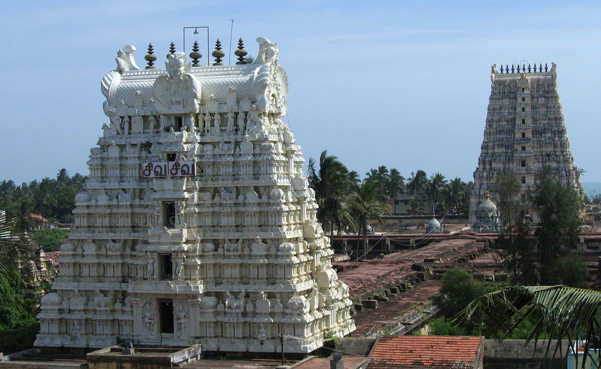
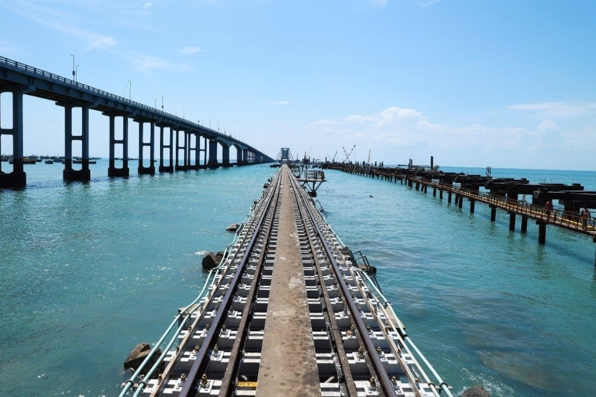

Ramanathaswamy temple
MAP 
Ramanathaswamy Temple (Rāmanātasvāmi Kōyil) is a Hindu temple dedicated to the Hindu god Shiva located on Rameswaram island in the state of Tamil Nadu, India. It is also one of the twelve Jyotirlinga temples. It is one of the 275 Paadal Petra Sthalams, where Nayanars (Saivite saints), Appar, Sundarar and Tirugnana Sambandar, have glorified the temple with their songs. The Lingam of Ramanathaswamy (Shiva), was established and worshiped by Shri Rama, before he crossed his bridge to the present-day island of Sri Lanka. It is one of the Char Dham pilgrimage sites. The temple was expanded during the 12th century by the Pandya Dynasty, and its principal shrine’s sanctum was renovated by Jeyaveera Cinkaiariyan and his successor Gunaveera Cinkaiariyan, monarchs of the Jaffna kingdom. The temple has the longest corridor among all Hindu temples in India. It was built by King Muthuramalinga Sethupathiy.[1][2] The temple, located in Rameswaram, is considered a holy pilgrimage site for Shaivites, Vaishnavites and Smarthas.